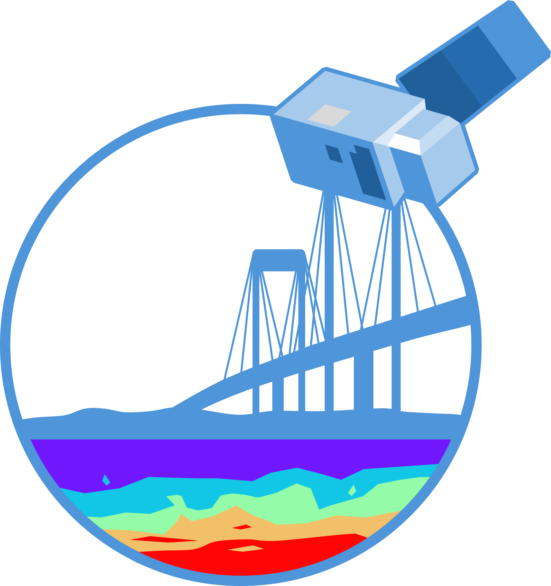

<div style="display:flex; align-items:center; gap:0.8em; margin-top:1em; margin-bottom:1em;">
    
    <div style="font-size:2em; line-height:1.3; font-weight:600;">
      Estimación de profundidad de disco de Secchi para el desarrollo de un algoritmo mediante técnicas de teledetección satelital
    </div>
  </div>
  